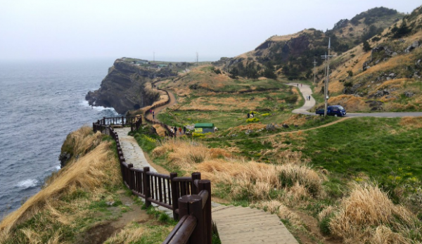
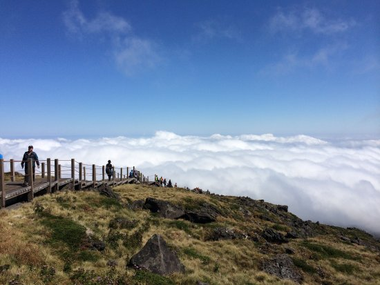
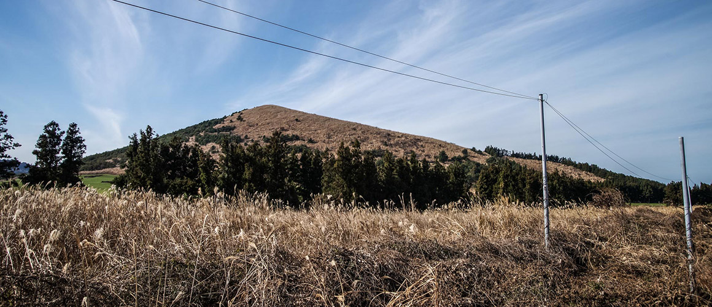
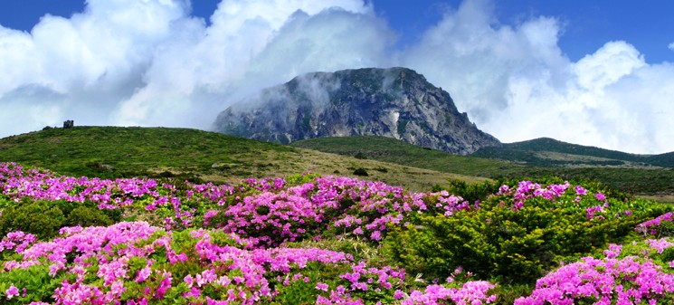

제주도(濟州島, 영어: Jeju Island)는 대한민국의 남해에 위치한 섬이자 대한민국에서 가장 큰 섬이다. 또한 제주도는 행정구역상 제주특별자치도에 속한다.
섬의 면적은 1,846km²인데 이는 남한 면적의 1.83%에 해당한다. 2020년 기준 주민등록 인구는 약 67만 명으로 대한민국의 섬 중에서 가장 인구가 많다.
하이킹 트레일
제주 올레길

올레길은 제주도의 트레일이다. 올레란 제주 방언으로 좁은 골목이란 뜻이며, 통상 큰길에서 집의 대문까지 이어지는 좁은 길을 말한다.
영실
영실 등산로는 길이 5.8km, 2시간 30분이 소요되는 코스로, 한라산 코스 중 가장 짧으면서도 가장 아름다운 구간으로 꼽힌다.
성널오름

오름 중턱에 널빤지 모양의 암벽이 둘러져 있는 모습이. 마치 성벽처럼 보인다 하여 성널오름
정물오름

한림읍 금악리에 있는 기생 화산으로 해발 466m의 오름.
관광지
성산 일출봉
마그마가 물속에서 분출하면서 만들어진 수성화산체. 거대한 성과 같다고 해서 '성산(城山)', 해가 뜨는 모습이 장관이라 하여 '일출봉(日出峰)'이라는 이름이 붙었다.
한라산 국립공원

지리산, 북한의 금강산과 함께 한반도의 3대 영산에 속하는 한라산은 한반도의 최남단에 위치하고 있으며, 높이 해발 1,950m로 남한에서 가장 높다.